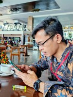
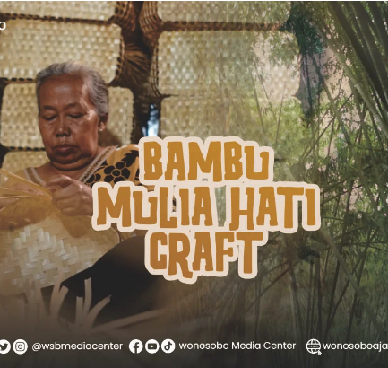
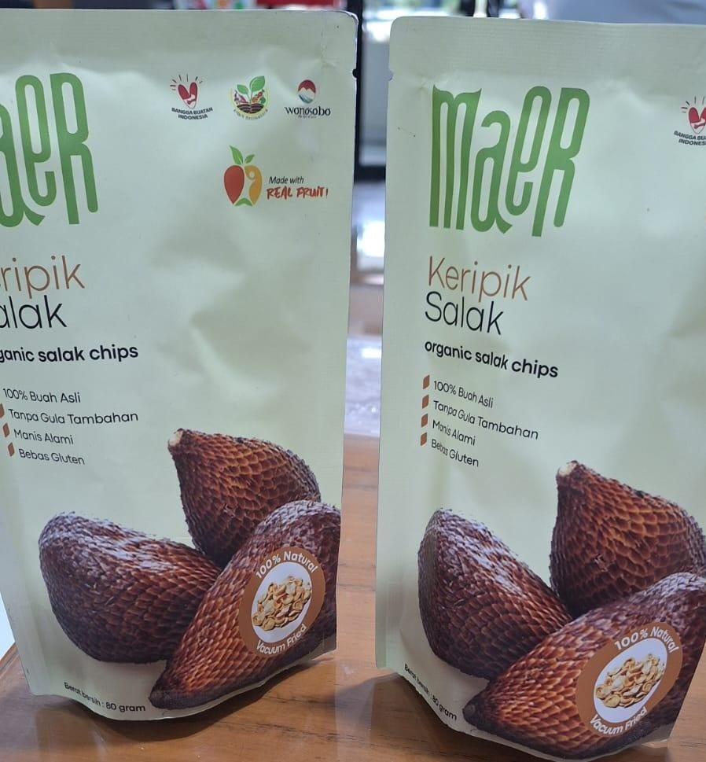
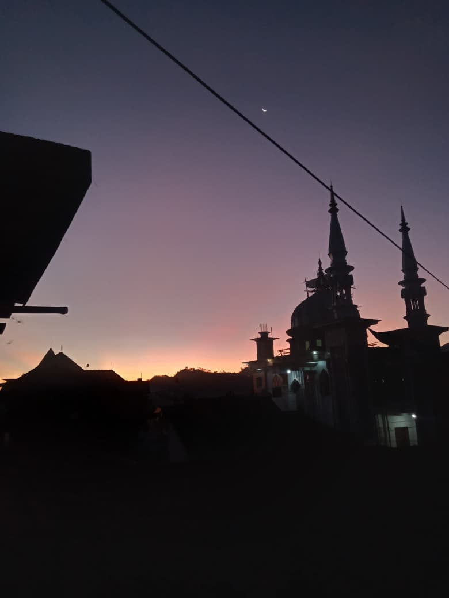

Portal informasi desa modern yang menyediakan layanan publik, statistik penduduk terkini, informasi UMKM lokal, galeri kegiatan desa, dan pengaduan masyarakat yang transparan.
Kenali lebih dekat tentang Desa Watumalang
Desa Watumalang memiliki sejarah panjang sebagai sentra pertanian organik dan wisata alam. Baca Lengkap →
"Menjadi desa yang maju, mandiri, modern, dan sejahtera." Menuju kemandirian ekonomi dan kesejahteraan masyarakat.
Struktur organisasi dan aparatur pemerintahan Desa Watumalang
Kepala Desa

Sekretaris Desa
Kaur Perencanaan
Kasi Pemerintahan
Kasi Kesejahteraan
Kepala Dusun Watumalang
Kepala Dusun Tripis
Kaur Keuangan
Kepala Desa
Sekretaris Desa
Kaur Perencanaan
Kasi Pemerintahan
Kasi Kesejahteraan
Kepala Desa Watumalang
Kepala Dusun Tripis
Kaur Keuangan
Data demografi terkini Desa Watumalang
Total Penduduk
Laki-laki
Perempuan
Kepala Keluarga
Usaha Mikro Kecil Menengah unggulan Desa Watumalang

Di Kecamatan Watumalang, Wonosobo, UMKM kerajinan bambu tumbuh sebagai bagian dari ekonomi kreatif dan kearifan lokal pedesaan. Potensi kerajinan bambu setempat berfokus pada pemanfaatan material alami yang melimpah, dipadukan dengan budaya masyarakat dalam mengolah bambu menjadi berbagai produk bernilai seni tinggi.
Dusun Krajan, Desa Watumalang

Usaha Mikro, Kecil, dan Menengah (UMKM) Kelompok Tani Bangun Suruhan di Desa Wonosroyo, Kecamatan Watumalang, Wonosobo sukses mengolah dan mengemas (packing) salak organik menjadi komoditas bernilai tinggi. Mereka memproduksi keripik salak berkualitas ekspor yang dikemas secara higienis untuk meningkatkan daya tahan dan nilai jual.
Dusun Tengah, Desa Watumalang
Momen-momen indah dan kegiatan masyarakat Desa Watumalang

Kegiatan budaya tahunan yang meriah melibatkan seluruh warga desa. Ada banyak cara untuk mengungkapkan rasa syukur kepada sang pencipta seperti dalam tradisi Merti Dusun. Merti Dusun (sering juga disebut bersih desa atau sedekah bumi) adalah upacara adat tradisional masyarakat Jawa yang diselenggarakan sebagai wujud rasa syukur kepada Tuhan Yang Maha Esa atas limpahan rezeki, kesuburan tanah, hasil panen yang melimpah, serta keselamatan warga.

Keindahan senja di Desa Watumalang menghadirkan suasana yang tenang dan menyejukkan. Siluet bangunan masjid yang berpadu dengan langit jingga keunguan menjadi gambaran harmonis keasrian desa serta ketentraman masyarakat menjelang malam.

Kegiatan gotong royong warga membersihkan material longsor yang menutup akses jalan desa. Dengan bekerja sama menggunakan alat sederhana, warga memindahkan tanah dan bebatuan agar jalan kembali aman dan dapat dilalui. Kegiatan ini menunjukkan semangat kebersamaan, kepedulian, dan solidaritas masyarakat dalam menghadapi bencana.
Temukan letak geografis Desa Watumalang di Kabupaten Wonosobo
Hubungi kami untuk informasi lebih lanjut atau sampaikan pengaduan Anda
Alamat Kantor:
Jl. Watumalang Km.01, Desa Watumalang
Kec. Watumalang, Kab. Wonosobo 56352
Telepon:
0858 7086 5030